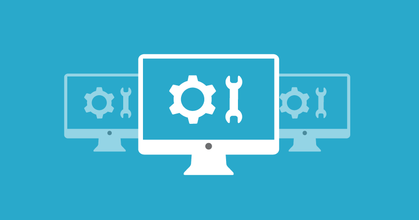

Mantenimiento de Hardware de Red
Aprendemos como dar mantenimiento y actualización al hadware de red.
Aprendemos como dar mantenimiento y actualización al hadware de red.
Aprendemos como actualizar de forma correcta el sofware en una red.
Aprendemos la administración de las diferentes redes de compúto.